Heuristics Blog Post
Introduction to Heuristic Methods
Heuristics notes- some rough thoughts.
A lot of what I study is motivated by decision making- the idea that by understanding things like economics or biology we can understand the world better, and so help steer events along the course that we’d like. This is what originally drew me to topics like military strategy, and now, studying complex technical systems, I see interesting parallels, as we try to comprehend and steer systems we don’t fully understand. Strategy isn’t algorithmic- although you can teach patterns, concepts, and maxims, it still has more in common with art (or literature/storytelling, as Lawrence puts it[cite STRATEGY]) than a precise science. Some of the first attempts I’ve seen at complex systems engineering reflect this (cite complex systems eng paper, emergence book)- although there are some precise techniques, such as numerical indicators for detecting chaos or emergence, I often find the actionable principles somewhat unsatisfying. Instead of precise rules, the reader is more likely to get vague statements about complexity and unpredictability, and a need for flexibility and adaptation. The crucial question, of course, is how we do that. One possible road forward is through the use of heuristic methods. This is something I’ve seen referred to in the past, but in a frustratingly vague manner. I’ve lately been going through the research on more actionable components, which I will try to gather into once place. The term heuristic generally refers to a rule of thumb or estimation rule, used when a more complex computation is inappropriate or impossible. The term is frequently used in computer science and AI, a connection we will return to in a moment. In psychological science, however, it is most commonly associated with Daniel Kahneman and (OTHER FAST AND SLOW GUY)s’ work on human cognitive biases, often referred to as the “heuristics and biases” school. Kahneman showed that under laboratory conditions, human cognition diverges, sometimes dramatically, from a rationally optimal (expectation-maximizing) agent. These divergences can often be explained in terms of effort-saving heuristics, where a complex problem is solved by substituting it for a simpler one. The heuristics and biases school primarily views these heuristics as cognitive defects caused by the limitations of human processing, although they agknowledge the practical utility of some aspects, such as loss aversion (CHECK THAT CHAPTER IN THINKING FAST AND SLOW). In recent decades, however, a competing/complimentary school of thought has emerged, lead primarily by Gerd Giegerenzer at the Max Placnk Institute for Human Development in , Germany. This approach, referred to as the ecological rationality school (CHECK), builds on the work of Siever(CHECK), and emphasizes the role of uncertainty and the limited computational resources available in driving human decision making. Rather than looking at heuristics as defects in an optimal-rational decision making process, they instead argue that the use of heuristics is a, if not the, fundamental block of human decision making, and under circumstances of limited information and computation time, is a better-optimized strategy than more computationally complex approaches. We don’t apply heuristics because we’re lazy, but rather because under most decision-making circumstances in human evolutionary history, they really do perform best.
Giegerenzer and his colleagues supported this by studying a range of decision circumstances, ranging from laboratory psychological experiments to tracking the behaviour of emergency room doctors attempting to diagnose heart patients, and noted that not only does the use of a fast-and-frugal tree serve as a good descriptive model for the decision makers’ actions, when side-by-side comparisons were possible, heuristic decision trees performed on par with more complex logistic-regression based methods. In particular, in the emergency room scenario, doctors equipped with a three-node decision tree were able to diagnose heart disease with efffectively the same accuracy as a more complex, logistic-regression based tool, and do so quicker and with reduced friction. In reading this paper, it was the last example that really sparked my interest, because the decision tree used there was not a descriptive model, attempting to capture the physicians’ expert knowledge- rather, it was an external tool that they applied. In my own research, especially when dealing with complex systems, I feel like I constantly come across what I can only describe as the “So what?” problem, the need to turn complex models or huge, multi-factor decision models into tools that I can actually use. I don’t sit down and draw out a matrix for most decisions in my life, even fairly important ones- I don’t personally know anyone who does, though I’m sure they exist. This particular example excited me, because it opened a road toward pragmatic application. Rather than fortune-cookie wisdom about focusing on only the most important factors (whatever they might be), we might be able to start assembling a toolbox for building real, useful tools, and making concrete decisions. Geigerenzer’s work forms a starting point for this. He identifies what he calls the “adaptive toolbox” - a set of fundamental patterns of heuristic behaviour that we see among people trying to make decisions.
The most fundamental of these is the aforementioned fast-and-frugal tree. A decision tree is a basic decision structure where a series of tests are represented as the nodes in a tree graph, and the edges of the graph as outcomes. As we observe evidence and carry out tests, we move through the graph, until we finally arrive at one of the leaves of the tree, giving us an outcome. You see these used both in human decision making, as a strategy tool for mapping out a potential outcome space too big to fit into memory, and in computational/machine learning approaches, such as the random forest approach (#SIDEBAR). (DIAGRAM OF DECISON TREE- TIKZ)
 Tokyo. B. Lucava
Fast-and-frugal trees (CITE FFTREES, or the math paper before it) are a specific type of tree with two constraints: they evaluate only a single piece of evidence at a time, ignoring cross-correlations (the fast propery) and at each level of the tree there is at least one exit node, where we arrive immediately at a conclusion without considering remaining evidence (the frugal property). This prevents the state space of the tree from growing too large (computational trees used in random forests frequently have hundreds of nodes, far too large for human comprehension) and can be evaluated quickly - trivially for a computer, and easily enough even within a human brain.
 Tokyo. B. Lucava
The fast-and-frugal tree (referred to going forward as an FFT) has computational advantages that can make it useful even when more powerful tools are available, but in our decision-making context, it is most useful because our brains already think this way. Like chunking phone numbers to make them more easily remembered and comprehensible, I think of Geizinger’s adaptive toolbox, and FFTs in particular, as a sort of cognitive biomechanics or ergonomics, a set of existing patterns for us to work around. Just as physical tools perform best when their form and forces fit the existing movement patterns of the human body, we want to design decision tools that fit the structures we already find in the human mind. This is why it’s even worth traiding off a certain degree of accuracy for usability- if we attempt to use an overly complex or unwieldy decision tool, in all likelyhood it won’t be used at all- just as I fail to write a decision matrix before choosing from the lunch menu, we will default to the cognitive tools available. I suspect- though I don’t have detailed evidence from the literature at this time- that this is what happened to the ER doctors who did not have access to a compressed decision tree, but instead were told to use a more unwieldy set of criteria. Each doctor may have mostly been operating off a personal heuristic tree, informed by the literature, but also through personal experience and pattern-matching. This unconscious expertise and pattern-matching can be valuable, but it can also lead us into traps, especially when we haven’t had the time to develop deep experience, either in a new domain or a complex and evolving one.
As part of the goal of staying practical, I’ll close with some notes on two interesting papers that both focused on the creation of specific FFTs for solving problems.
The first is a computational paper, the first that I’ve come across. This paper presents an algorithm in R, referrred to as FFTrees, for computationally generating an FFT from a dataset. We provide the data, given as a set of cues from which to infer, and the outcomes for each set of cues. The algorithm attempts to drill in on the most useful/decisive cues, and generates a tree. Impresssively, these tree-based algorithms perform well even when compared to more computationally thorough algorithms, such as logistic regression. This is especially true when the amount of input data is reduced, and the algorithms must infer rules from a small amount of data to study the rest. FFTs prove remarkably robust in taking rules from a relatively small amount of experience and extrapolating it to an unseen world- this provides a possible point of speculation on why FFTs have proved evolutionary favorable in human cognition. I see two, possibly three, interesting applications for this approach.
One is the straightforward, data-science style classification of large data sets. If you have information about the world that a human decision maker may have to act on without consuling a black-box decision aid, we can provide them with the algorithm directly. There may be some interesting applications for some sort of Bayesian updating here, to help you tweak your heuristics as your gain more experience or circumstances change. A high-tech startup trying to allocate sales resources may start out with a highly general heuristic obtained from experience, industry data, and general principles, and end a few weeks later with a targeted, bespoke set of rules reflecting their specific market, product, and current conditions. This isn’t revolutionary- it reflects what the team involved would be should anyway- but it provides a way to make that knowledge more transparent, testable, and shareable.
The second use I see is in parallel black-box/white-box methods. Even when a black box can be used, it’s often desirable for human analysists to be able to follow along with the automatic system. You may use an automatic system for classifying medical images or resumes, for instance. In this case, the black-box system may provide the highest level of accuracy for day-to-day operation, while a FFT (in combination with other dimensionality-reduction techniques, like PCA) could be used to identify key features of the data, as a sort of assumption check.
Finally, and most speculatively, I’d be interested in applying these sort of methods as an output filter to complex adaptive system methods. Complex adaptive systems studies, especially the Santa Fe Institute school, make heavy use of computational models to study evolving, non-equilibrium, nonlinear systems. These can capture fascinating dynamics that don’t emerge in linear models of the world, but often at the expense of legibility and specificity. Bak’s sandpile is a fascinating example of critical behaviour and beautiful mathematics, but other than alerting us that critical phenomena exist in the world, it doesn’t do a lot to warn us when we might trip over one.
I would be interested to take a computational model- an agent-based model of a online market, for instance- and pair a Monte Carlo-style exploration of the parameter space with a corresponding set of FFT classifiers- perhaps sorting models into archetypal scenario categories (stable/unstable) or classifying agents into populations. The hope here would be that the robustness of the FFT also provides robustness to some model error, and help us match an unfolding scenario in the real world to a particular simulation scenario or archetype. This is annoyingly vague and speculative, I realize, so I hope I’ll have a chance to actually give it a try in the not too distant future.
The second paper focuses even more closely on the clinical application of FFTs, in this case dealing with the decision to administer statins at risk of heart disease. This paper is interesting, because it deals with a more complex and realistic scenario than traditional machine learning classification problems. Rather than starting from raw data, we instead start with a flowchart model created by the American College of Cardiology. This model is derived from a combination of empirical studies and knowledge of the specific problem at hand. This tells us our cues (the specific indicators to look out for) and thresholds. Because of the computational simplicity of FFTs, the authors are able to generate the range of all possible trees (cue selection and ordering) from that set. These trees are then tested against a real-world dataset. This allows us not only to eliminate ineffective trees, but also to choose performance parameters - in this case trading off the rate of false positives against the rate of false negatives.
In many ways, it seems like heuristic methods provide a sort of neglected middle child, located between Type 1 pattern matching and Type 2 analytical cognition. This is unfortunate, because like the use of checklists and other cognitive tools, heuristics in general and fast-and-frugal methods in particular may offer substantial improvements in our decision making and effectiveness. They do this not by conjuring additional information out of the void, but by compressing our more complex models of the world down to something we can parse in the moment, and making our knowledge of the world available to us at the point of decision.